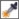

Быстрые ссылки на процедуры, описанные на этой странице:
• |
• |
• |
В CorelDRAW можно копировать свойства абрисов в другие объекты.
Абрисы можно также преобразовывать в объекты и удалять. При преобразовании абриса в объект создается замкнутый объект без заливки, повторяющий форму абриса. Для нового объекта можно применять заливки и специальные эффекты.
| Копирование свойств абриса в другой объект |
1. |
С помощью инструмента Указатель |
2. |
Щелкните правой кнопкой мыши и перетащите исходный объект на
объект назначения, к которому необходимо применить абрис.
|
За указателем от исходного к новому объекту тянется синий абрис. |
3. |
Когда указатель примет форму перекрестья , отпустите кнопку мыши и
выберите в контекстном меню пункт Скопировать абрис.
|
Для копирования свойств абриса можно также использовать
инструмент Пипетка атрибутов . Для получения дополнительных
сведений см. раздел Копирование свойств заливки, абриса или текста
из одного объекта в другой.
|
Можно также взять образец цвета существующего объекта и
применить его для абриса другого объекта. Для получения
дополнительных сведений см. раздел Взятие образца цвета.
|
| Преобразование абриса в объект |
1. |
Выделите объект.
|
2. |
Выберите пункт Упорядочить |
Абрис преобразовывается в замкнутый объект без заливки, заливка исходного объекта для него не применяется. Если для нового объекта требуется применить заливку, она будет применена для той области, которая была абрисом исходного объекта. |
Звезда с абрисом (слева); абрис преобразован в объект, не имеющий исходной заливки (в центре); для нового замкнутого объекта применена фонтанная заливка.
Абрис можно преобразовать в объект также с помощью комбинации
клавиш Ctrl + Shift + Q.
|
| Удаление абриса объекта |
1. |
Выделите объект.
|
2. |
На панели свойств выберите пункт Нет в списке Толщина абриса.
|
Абрис объекта можно удалить, выбрав объект и щелкнув правой
кнопкой мыши образец Нет цвета |
Copyright 2012 Corel Corporation. Все права защищены.